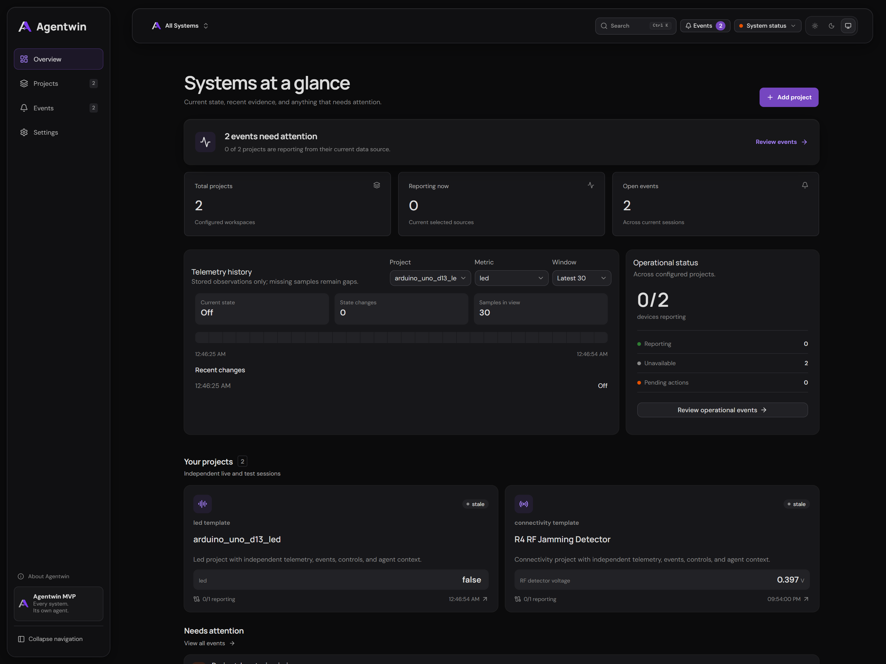
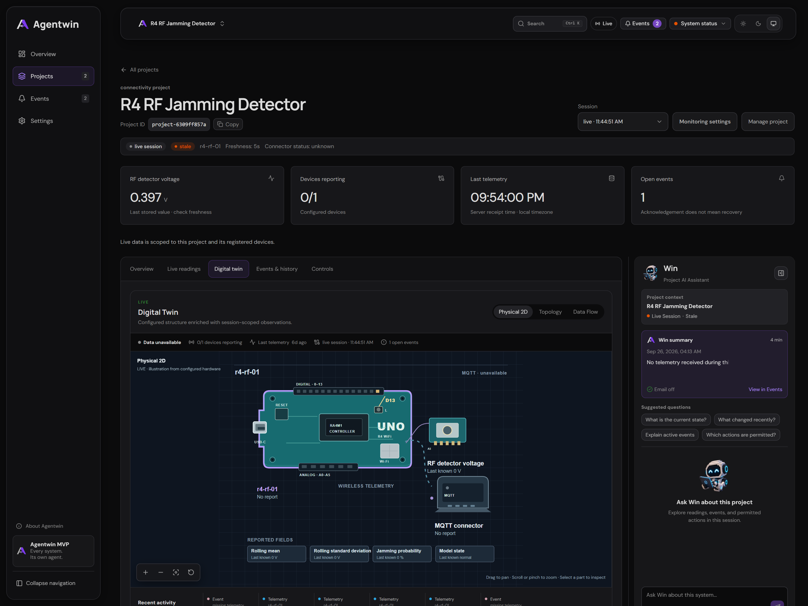
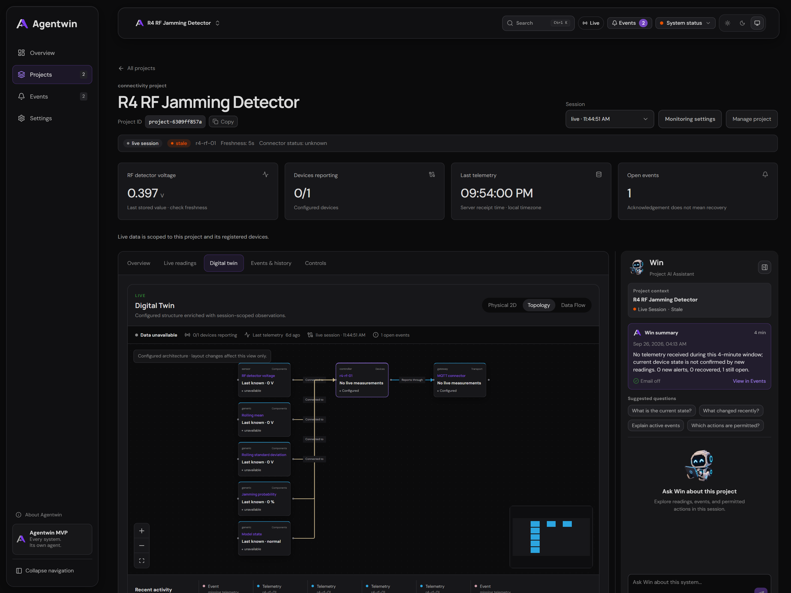
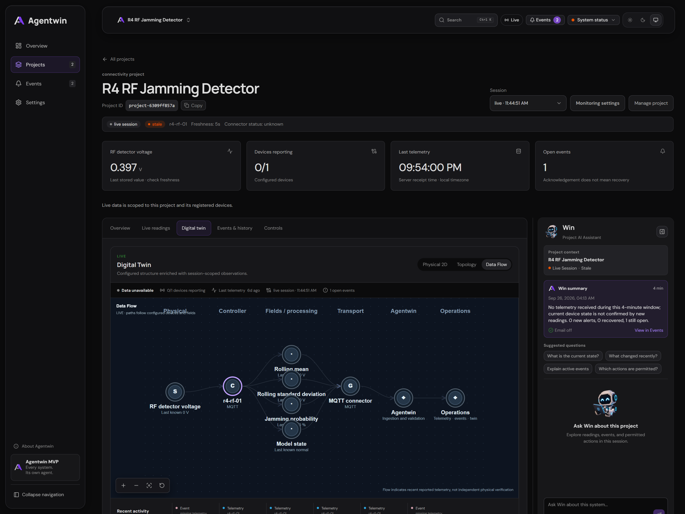
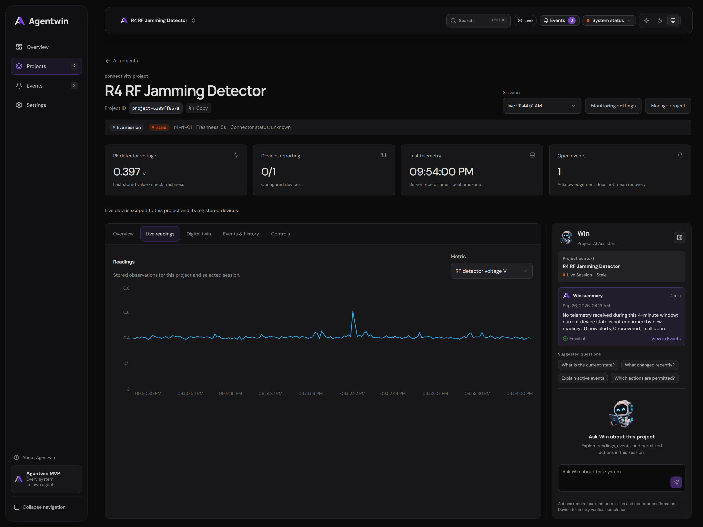
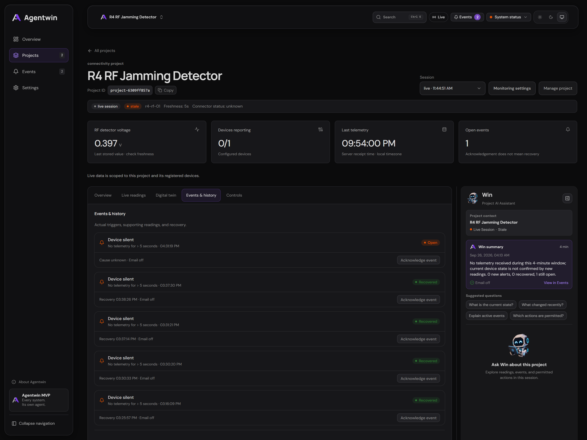
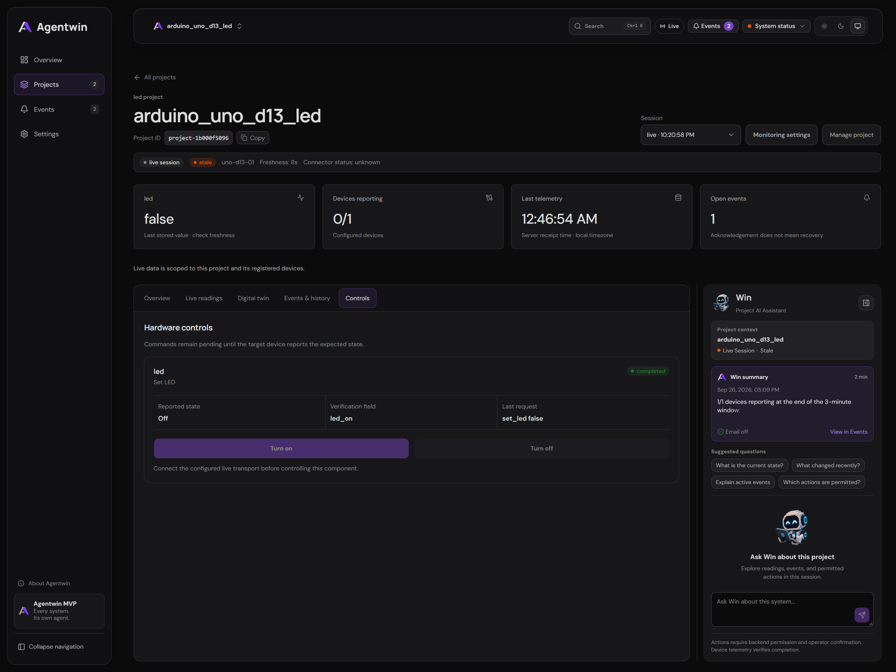
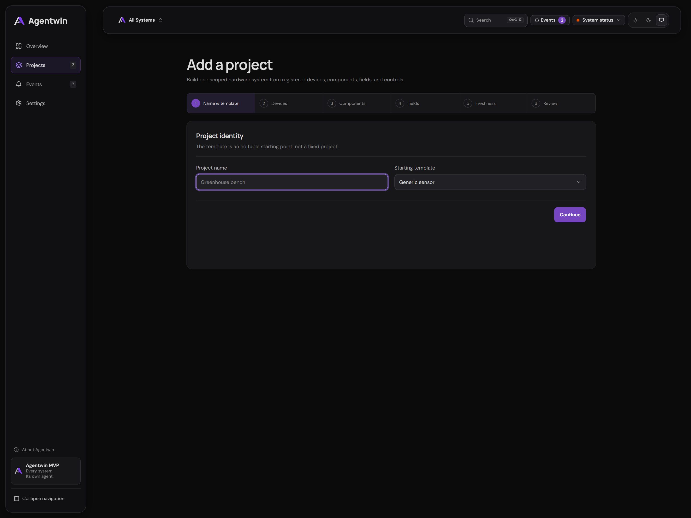

Agentwin.
Actual platform captures / MVP
Every system. Its own agent.
AI-assisted operational Digital Twin platform for IoT & edge systems.
Eight views of the running MVP — from physical structure to operational evidence.
Project health, stored telemetry, and events needing attention.

Configured hardware alongside the project-scoped AI assistant.

Devices, connectors, and their configured relationships.

Trace the operational path from devices to platform services.

Stored observations with source and freshness context.

Operational events and retained evidence for investigation.

Permission-aware controls; physical completion requires telemetry.

Define devices, components, fields, and freshness requirements.
